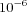

Simulated annealing is an optimization algorithm first proposed by Kirkpatrick et al. [
Kirkpatrick83] and was inspired by statistical mechanics and the way in which perfect crystals are formed. Perfect crystals are formed by first melting the substance of interest, and then cooling it very slowly. At large temperatures the particles vibrate with wide amplitude and this allows a search for global optimum. As the temperature decreases so do the vibrations until the system settles to the global optimum (the perfect crystal).
The simulated annealing optimization algorithm uses a similar concept: the objective function is considered a measure of the energy of the system and this is maintained constant for a certain number of iterations (a temperature cycle). In each iteration, the parameters are changed to a nearby location in parameter space and the new objective function value calculated; if it decreased, then the new state is accepted, if it increased then the new state is accepted with a probability that follows a Boltzmann distribution (higher temperature means higher probability of accepting the new state). After a fixed number of iterations, the stopping criterion is checked; if it is not time to stop, then the system's temperature is reduced and the algorithm continues.
Simulated annealing is a stochastic algorithm that is guaranteed to converge if ran for an infinite number of iterations. It is one of the most robust global optimization algorithms, although it is also one of the slowest. (Be warned that simulated annealing can run for hours or even days!).
This implementation of simulated annealing is based on the code of Corana et al. [
Corana87]. This implementation has tuned some of the parameters of the original implementation as follows:
- Each temperature cycle takes random steps, with p being the number of optimization parameters.
- At each step, a new candidate solution is accepted if it fulfills either of the following:
- it reduced the objective function value, or
- with a probability equal to , where is the increase in objective function value, and T is the current temperature.
- The stopping criterion is applied to the last two temperature cycles (i.e. the change in objective function between this temperature and the previous must have been smaller than the Tolerance in the last two cycles).
Options for Simulated Annealing
- Start Temperature
- Initial temperature of the system. The higher the temperature, the larger the probability that a global optimum is found. Note that the temperature should be very high in the beginning of the method (the system should be above the "melting" temperature). This value has the same units as the objective function, so what represents "high" is different from problem to problem. The default is '1'.
- Cooling Factor
- Rate by which the temperature is reduced from one cycle to the next, given by the formula: Tnew=Told*"Cooling Factor". The simulated annealing algorithm works best if the temperature is reduced at a slow rate, so this value should be close to 1. (but values closer to 1 will also cause the algorithm to run longer). The default is '0.85'.
- Tolerance
- Convergence stopping criteria: the method stops when the change in the objective function has been smaller than this value in the last two temperature steps. The default is . (This is an absolute tolerance)
- Random Number Generator
- The parameter is an enumeration value to determine which random number generator this method shall use. COPASI provides two random number generators R250 [Maier91] (selected through the value 0) and the Mersenne Twister [Matsumoto98] (selected through the value 1 (default)).
- Seed
- The parameter is a positive integer value to determine the seed for the random number generator. A value of zero instructs COPASI to select a "random" value.